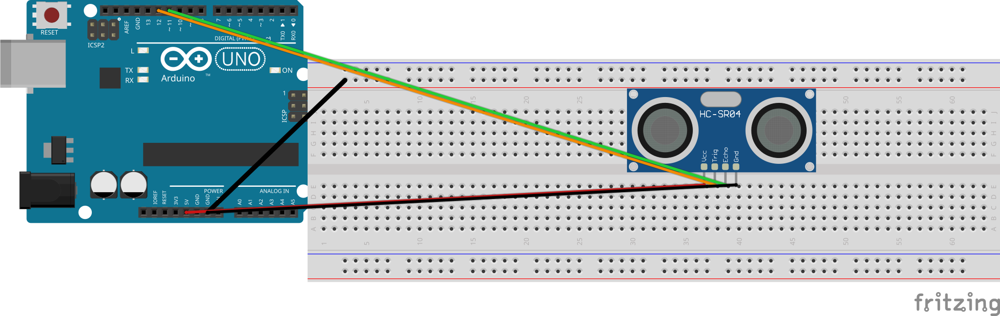

🔌תרשימי החיווט
פרויקט 3 • לא להתקרב יותר מדי • כרטיסיית עזר לעמדת התלמיד
הכרטיסייה הזאת מראה איך מחברים את חיישן המרחק, את הלד ואת הזמזם בפרויקט 3. שומרים אותה ליד הברדבורד. אם מתבלבלים בחיווט, קודם מסתכלים על הכרטיסייה הזאת לפני שקוראים למורה.
יש כאן ארבעה חיווטים. כל אחד בונה על הקודם: מתחילים מהחיישן לבדו, מוסיפים לד, מוסיפים זמזם, ובסוף — לגרסה 3 בלבד — לד אזהרה שני.
הכללים החשובים ביותר
- בחיישן יש ארבע רגליים מסומנות: VCC, Trig, Echo, GND. בודקים את התווית שכתובה על החיישן עצמו מול התרשים. קל להחליף בין Trig ל-Echo, או בין VCC ל-GND.
- הרגל הארוכה של הלד = חיובי (+). היא הולכת לנגד, ומשם לרגל דיגיטלית של הארדואינו. הרגל הקצרה = שלילי (−) — היא הולכת ל-GND.
- לכל לד צריך נגד של 220 אוהם משלו (פסי צבע: אדום · אדום · חום). בלי נגד = לד שרוף.
- לזמזם אין כיוון ולא צריך לו נגד. רגל אחת הולכת לרגל דיגיטלית 8, הרגל השנייה ל-GND. לעולם לא מחברים את הזמזם ישירות ל-5 V.
- רגליו של החיישן ורגלי הלד נכנסות לטורים שונים בברדבורד (טור = פס ממוספר 1–30) — אף פעם לא שתי רגליים של אותו רכיב באותו טור.
מפת הרגליים
| רכיב / אות | אל | מופיע ב- |
|---|---|---|
חיישן — Trig | רגל 12 | חיווט 1 |
חיישן — Echo | רגל 11 | חיווט 1 |
חיישן — VCC | 5 V | חיווט 1 |
חיישן — GND | GND | חיווט 1 |
| לד אזעקה (דרך נגד 220 אוהם) | רגל 9 | חיווט 2 |
| זמזם | רגל 8 | חיווט 3 |
| לד אזהרה שני (דרך נגד 220 אוהם) | רגל 10 | חיווט 4 — גרסה 3 |
חיווט 1 — חיישן המרחק לבדו (שלב 1)
מעגל הבסיס של הפרויקט: רק חיישן המרחק (HC-SR04), ארבע רגליו מחוברות. זה החיווט של שלב 1, לפני שמוסיפים לד או זמזם.
מכניסים את ארבע הרגליים בטור ישר אחד בברדבורד, כך ששתי ה"עיניים" העגולות פונות החוצה מעבר לקצה הברדבורד — במקום שבו יד יכולה לעבור מולן.
HC-SR04 Arduino VCC ─────────── 5V Trig ─────────── pin 12 Echo ─────────── pin 11 GND ─────────── GND

חיווט 1: VCC ל-5 V (אדום), GND ל-GND (שחור), Trig לרגל 12 (כתום), Echo לרגל 11 (ירוק).
חיווט 2 — חיישן + לד אזעקה (שלב 3)
אותו חיווט כמו בחיווט 1, ומוסיפים לד אחד על רגל 9 דרך נגד 220 אוהם: הרגל הארוכה ← נגד ← רגל 9, הרגל הקצרה ← GND. זה בדיוק חיווט הלד שעשיתם בפרויקט 1 ובפרויקט 2.
HC-SR04 Arduino
VCC ─────────── 5V
Trig ─────────── pin 12
Echo ─────────── pin 11
GND ─────────── GND
Arduino pin 9 ──[220 Ω]──┬── LED long leg (+)
▼
LED short leg (−) ── Arduino GND

חיווט 2: חיווט 1, ובנוסף לד — הרגל הארוכה (+) דרך נגד 220 אוהם לרגל 9, הרגל הקצרה (−) ל-GND.
חיווט 3 — חיישן + לד + זמזם = אזעקה מלאה (שלב 4)
אותו חיווט כמו בחיווט 2, ומוסיפים את הזמזם: רגל אחת לרגל 8, הרגל השנייה ל-GND. שתי רגלי הזמזם נכנסות לטורים שונים בברדבורד — לא לאותו טור, זה ייצור קצר. עכשיו יש אזעקת קרבה מלאה: אור וגם צליל.
HC-SR04 Arduino
VCC ─────────── 5V
Trig ─────────── pin 12
Echo ─────────── pin 11
GND ─────────── GND
Arduino pin 9 ──[220 Ω]──┬── LED long leg (+)
▼
LED short leg (−) ── Arduino GND
Arduino pin 8 ───────────── Buzzer leg 1
Arduino GND ───────────── Buzzer leg 2

חיווט 3: חיווט 2, ובנוסף זמזם — רגל אחת לרגל 8 (כתום), הרגל השנייה ל-GND (שחור). אין לזמזם כיוון ואין לו נגד; אף פעם לא מחברים אותו ל-5 V.
חיווט 4 — אזעקה בשני שלבים (גרסה 3 בלבד)
נחוץ רק למי שבונים אזעקה בשני שלבים בגרסה 3: לד אזהרה (צהוב) שמאיר כשמשהו מתקרב, ולד אזעקה (אדום) שמאיר כשמתקרבים עוד יותר. מוסיפים לחיווט 3 לד שני על רגל 10 עם נגד 220 אוהם משלו, מחווט בדיוק כמו לד האזעקה על רגל 9.
HC-SR04 Arduino
VCC ──────────── 5V
Trig ──────────── pin 12
Echo ──────────── pin 11
GND ──────────── GND
Arduino pin 9 ──[220 Ω]──┬── alarm LED long leg (+)
▼
alarm LED short leg (−) ── Arduino GND
Arduino pin 10 ──[220 Ω]──┬── warning LED long leg (+)
▼
warning LED short leg (−) ── Arduino GND
Arduino pin 8 ───────────── Buzzer leg 1
Arduino GND ───────────── Buzzer leg 2

חיווט 4: חיווט 3, ובנוסף לד אזהרה שני על רגל 10 דרך נגד 220 אוהם משלו. כל לד עם הנגד שלו.